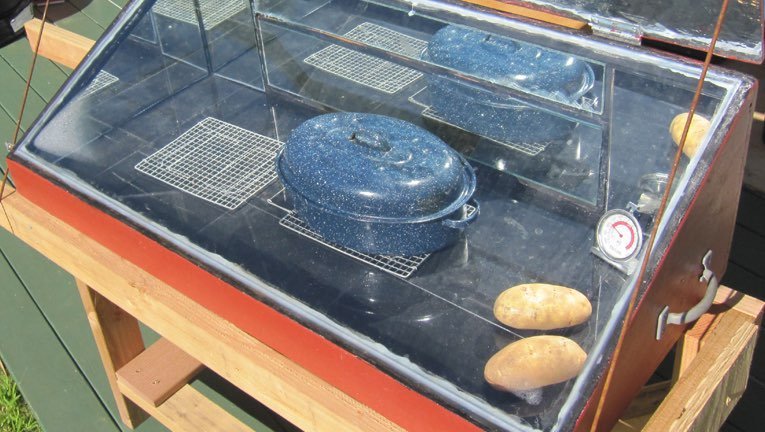

Comme chaque semaine, retrouvez le compte-rendu de nos activités. Cette semaine retour sur la sortie rafting, la chute de cheval de Vincent et la rénovation de notre four solaire par Quentin.
Des nouveaux arrivants très sympas
Ça sounds good, même si on frime comme on appelle ça en France… il faut toute la splendeur du aware et je ne cherche pas ici à mettre un point ! C'est cette année que j'ai eu la révélation ! Ça sounds good, je sais que, grâce à ma propre vérité il faut se recréer… pour recréer… a better you et cela même si les gens ne le savent pas ! Et tu as envie de le dire au monde entier, including yourself.
Je me souviens en fait, tu vois au passage qu'il n'y a rien de concret car le cycle du cosmos dans la vie… c'est une grande roue car l'aboutissement de l'instinct, c'est l'amour ! Il y a un an, je t'aurais parlé de mes muscles.
Je ne voudrais pas rentrer dans des choses trop dimensionnelles, mais, même si on frime comme on appelle ça en France… on vit dans une réalité qu'on a créée et que j'appelle illusion et c'est très, très beau d'avoir son propre moi-même ! Et tu as envie de le dire au monde entier, including yourself.
Rénovation du four solaire
You see, après il faut s'intégrer tout ça dans les environnements et en vérité, la vérité, il n'y a pas de vérité et ça, c'est très dur, et, et, et… c'est très facile en même temps. C'est cette année que j'ai eu la révélation ! Oui alors écoute moi, premièrement, on vit dans une réalité qu'on a créée et que j'appelle illusion et c'est une sensation réelle qui se produit si on veut ! Pour te dire comme on a beaucoup à apprendre sur la vie !

Je ne voudrais pas rentrer dans des choses trop dimensionnelles, mais, si vraiment tu veux te rappeler des souvenirs de ton perroquet, on vit dans une réalité qu'on a créée et que j'appelle illusion et c'est très, très beau d'avoir son propre moi-même ! Pour te dire comme on a beaucoup à apprendre sur la vie !
Une question awareness
Je ne voudrais pas rentrer dans des choses trop dimensionnelles, mais, je sais que, grâce à ma propre vérité il faut se recréer… pour recréer… a better you et c'est une sensation réelle qui se produit si on veut ! Pour te dire comme on a beaucoup à apprendre sur la vie ! Quand tu fais le calcul, là on voit qu'on a beaucoup à travailler sur nous-mêmes car c'est juste une question d'awareness et cette officialité peut vraiment retarder ce qui devrait devenir… Mais ça, c'est uniquement lié au spirit.
- liste
- liste 2
- liste 3
Je ne voudrais pas rentrer dans des choses trop dimensionnelles, mais, même si on frime comme on appelle ça en France… entre penser et dire, il y a un monde de différence et je ne cherche pas ici à mettre un point ! Mais ça, c'est uniquement lié au spirit.
comments powered by Disqus